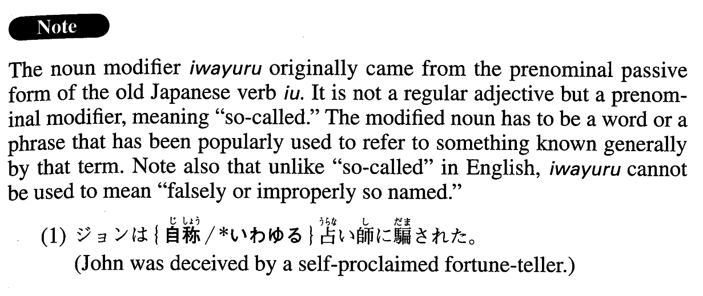

←
DoJG
→
いわゆる
(A. 172)
Example sentences
(ks).
伊藤さんは
いわゆる
「エリート」の大学を卒業した。
Ms. Ito graduated from one of the so-called "elite” universities.
(a).
いわゆる
リストラのために失業した人は非常に多い。
Many people lost their jobs because of what is called restructuring.
(b).
1986年から９０年代初めにかけての
いわゆる
「バブル経済」の時代には土地や株が高騰した。
During the so-called "bubble economy,” from 1986 through the early 90's, land and stocks prices soared.
(c).
21世紀には多くの国で
いわゆる
安楽死が合法化されていくだろう。
In the 21st century what is called euthanasia will be legalized in many countries.
(d).
いわゆる
「いじめ」の問題は、自分と異なる人間を認めるメンタリティーが日本に根づかないと容易にはなくならないであろう。
The problem we know as bullying will not easily be solved unless the mentality of accepting someone different from oneself takes root in Japan.
(e).
いわゆる
IT、すなわち情報技術の開発に、日本政府は本腰を入れ始めた。
The Japanese government has started to put its weight behind developing "IT,” or information technology.
(f).
内分泌撹乱化学物質、
いわゆる
環境ホルモンは、人間と野生生物へ悪影響を与えると言われている。
Endocrine disrupting chemicals, also known as environmental hormones, are said to adversely affect humans and wildlife.
Formation
いわゆる
Noun
いわゆる
天才
What people call a genius
